All 24 routed captures below were generated in one Playwright run
(marker_closure_evidence, Chromium) from the current candidate state:
HEAD e20453d plus the uncommitted marker-closure slice
(owner-analytics-view.tsx sha256 1c303555…032a1a4e,
owner-analytics.css sha256 c01bbfbc…8b6c5ba8).
Mock payload is the standing mixedDaily fixture (businessDay 2026-07-21,
peak 57, interior gaps); latest-state captures override
businessDay to today in the payload gym zone; selected-state captures
keyboard-select interior reading 31 (both trimmed sides). Per-file bytes/sha256 are in
FILES.json. Supersedes every earlier owner-analytics-*,
chart-repair-*, chart-marker-*, chart-annotations-*,
and marker-geometry-* capture: judge only this package.
Accepted Paper authority: FITWAY UX Exploration / Page 1 /
OWNER DAILY ANALYTICS PRODUCTION SET — CURRENT (area I89-0).
Desktop reference frames ID9-0/IOF-0 (open),
IB4-0/IMA-0 (latest), IGK-0/IRQ-0 (selected);
mobile frames J5M-0/JE1-0, J3Q-0/JC5-0, J87-0/JGM-0
— recorded in AUTHORITY_MANIFEST.yaml. Expected treatment: the red curve
meets the highlighted marker at the OUTER ring boundary; no red paint continues
toward the inner core.
What to verify: in every close-up, the red stroke abuts the outer ring edge and stops; the ring interior holds only the small solid core. Full-page shots prove no composition, state, annotation, navigation, or responsive regression.
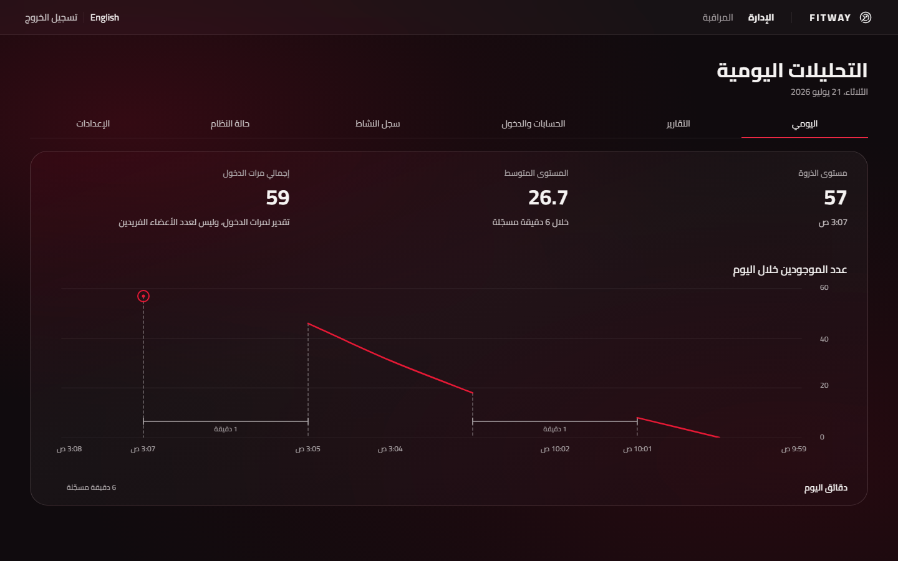
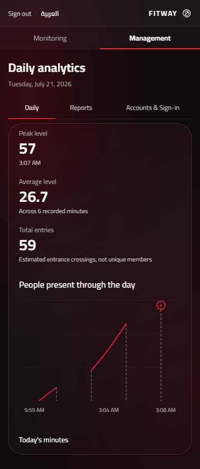
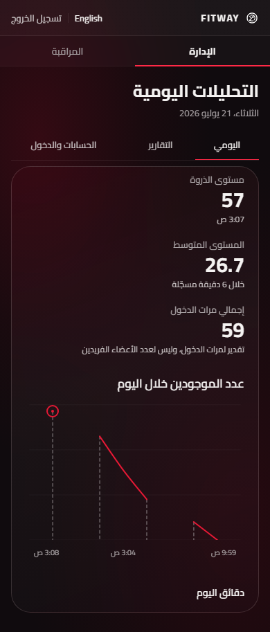
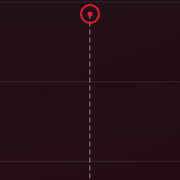
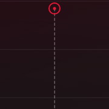
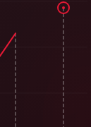
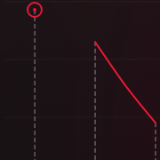
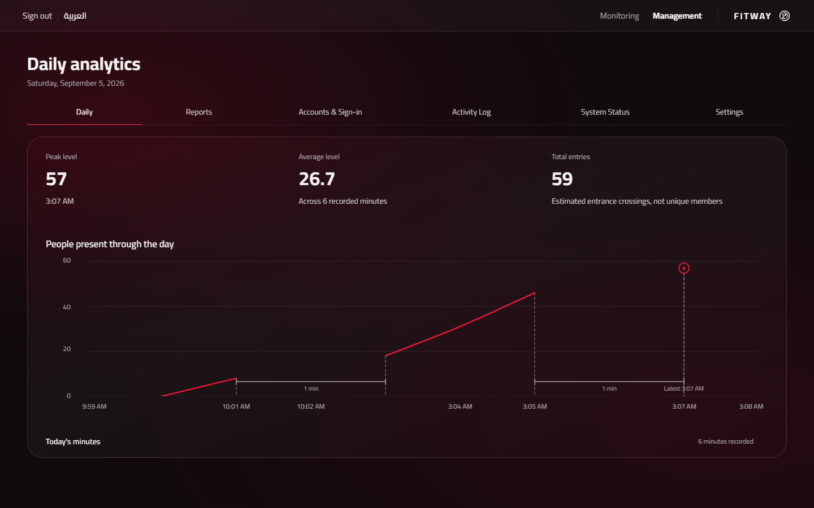
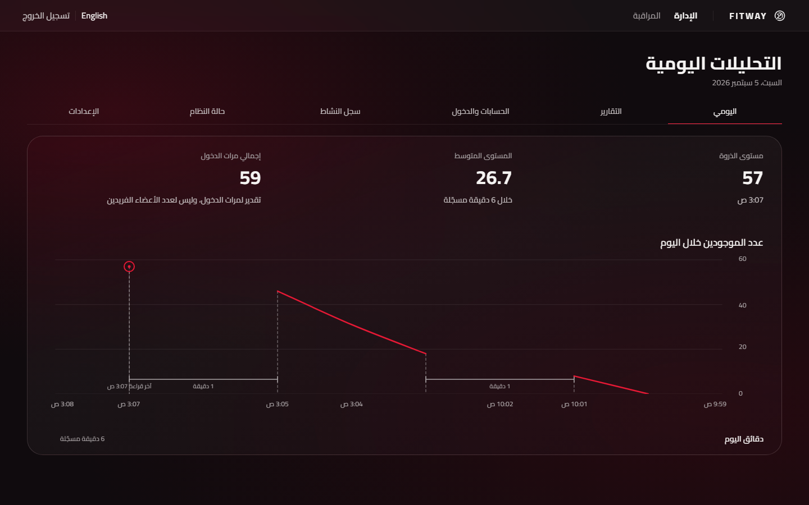
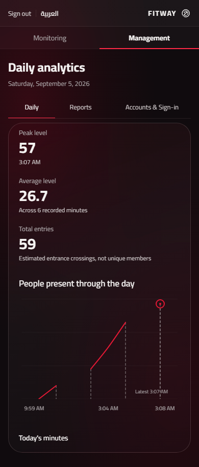
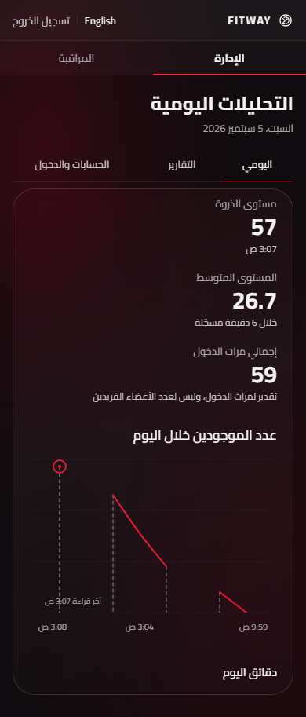
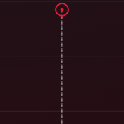
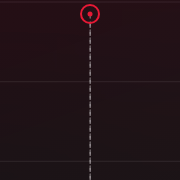
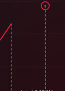
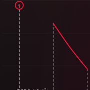
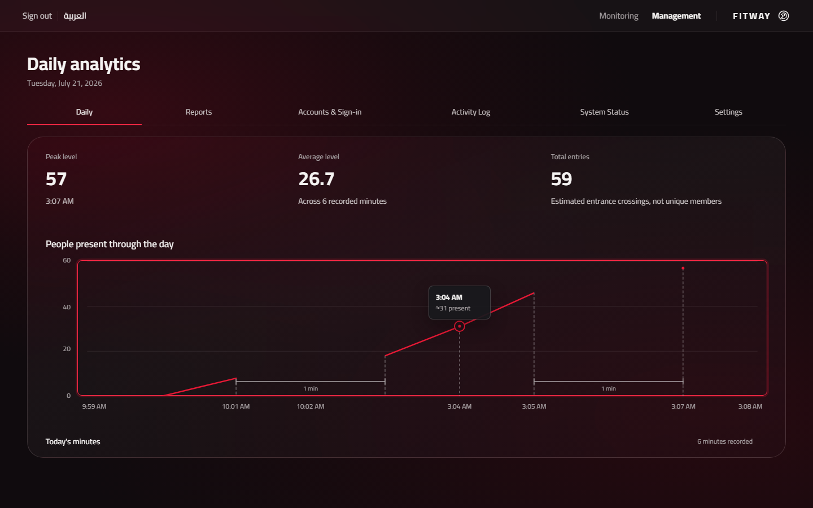
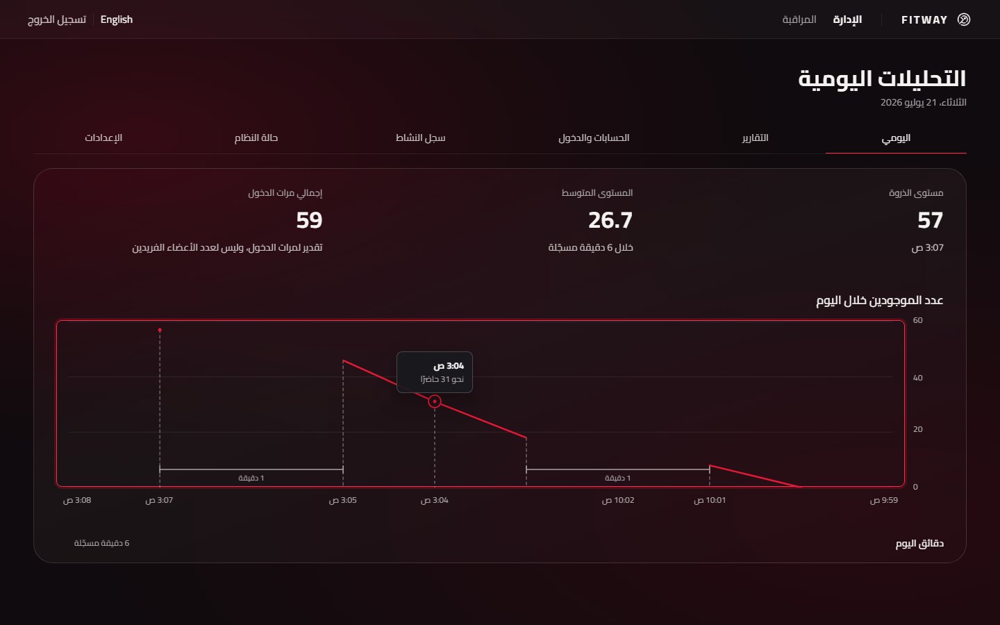
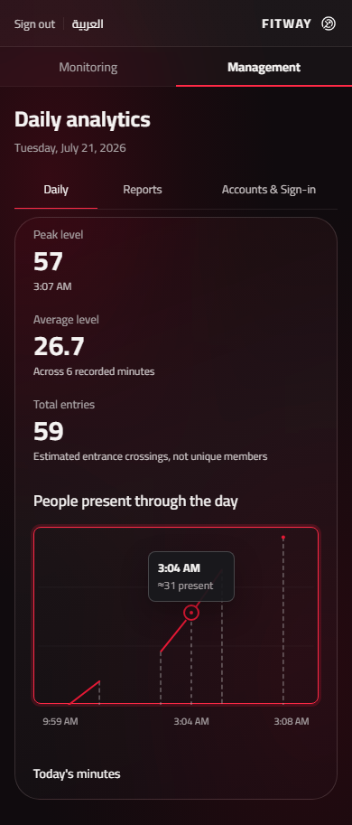
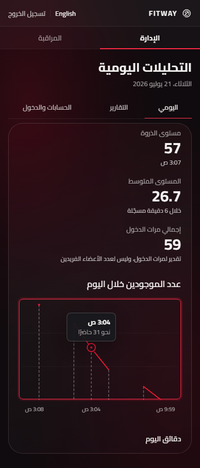
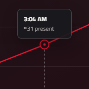
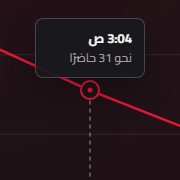
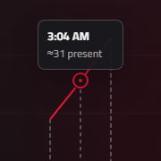
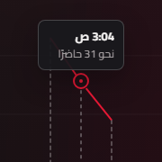